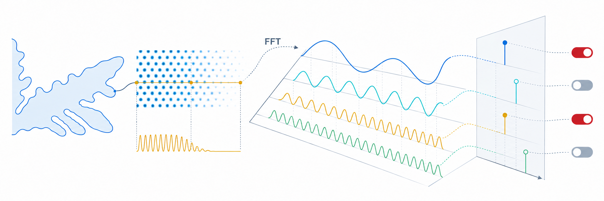

Jingkun Jiang

About me
I’m Jingkun Jiang, a master’s student in Materials Science and Engineering at Hunan University, advised by Prof. Yang Xia. I work on scientific computing and high-performance computing for physical simulations.
I develop phase-field (PF), phase-field crystal (PFC), structural PFC (XPFC), and amplitude PFC (APFC) solvers to study dendritic growth, crystal formation, and grain evolution. My work includes finite-difference and spectral methods, CUDA/MPI parallelization, distributed FFTs, and tools for studying defects and grain statistics. More recently, I led the design and implementation of sp-DBA with Prof. Xia, a GPU-friendly adaptive framework for transform-domain solvers.
Research interests
- Scientific Computing
- Phase-Field Modeling
- High-Performance Computing (HPC)
- Adaptive Computing
Beyond research
I’m an ESFJ, and I love meeting people and helping out. On campus, I’ve been a teaching assistant, student affairs assistant, class representative, and peer supporter. I also volunteer at marathons, competitions, and interview events. Getting to know someone new and having a good conversation always makes me happy.
I like running, although research and PhD applications have kept me away from it lately—and left me with a few extra pounds. My enthusiasm for good food is still going strong. Eating my way through the city I live in has long been one of my small ambitions!